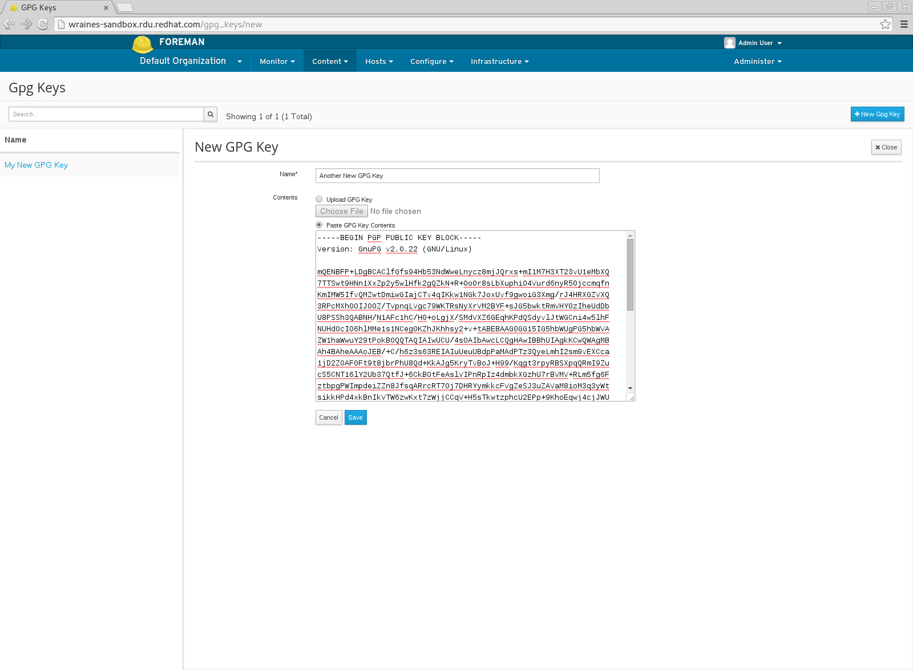
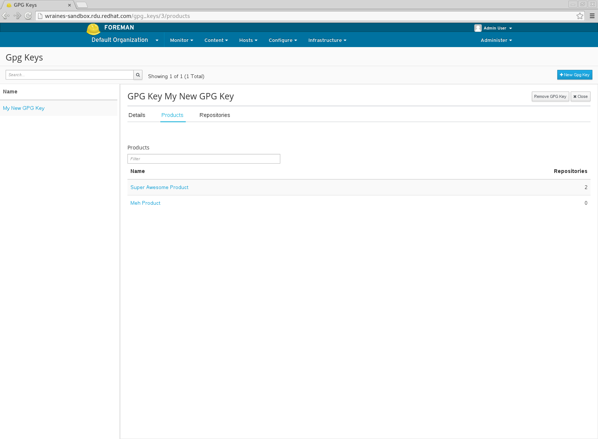
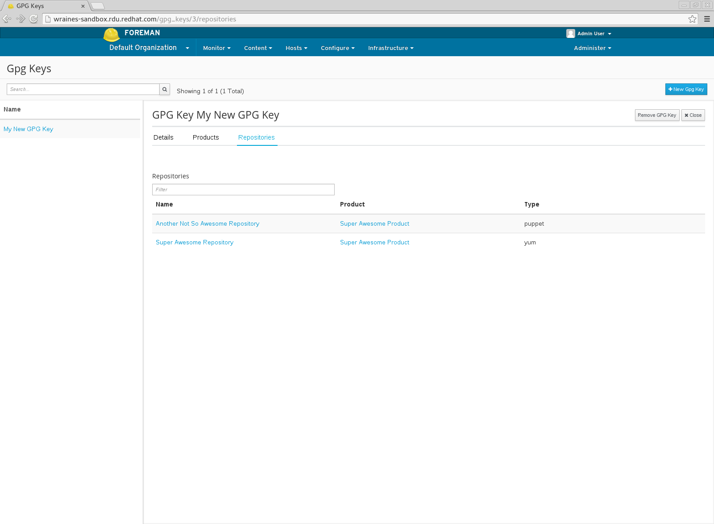
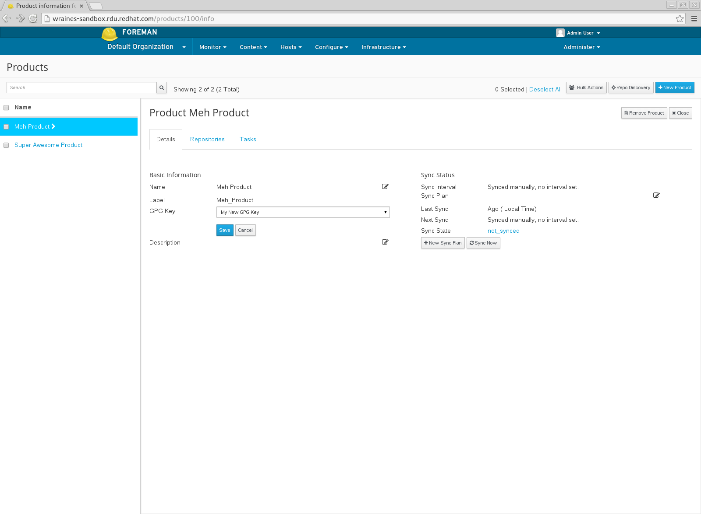

GPG Keys
Managing Content Hosts using GPG Keys
GPG Keys provide a way to verify the integrity of packages found within a Repository and/or Product.
Once one or more GPG Keys have been created, they can be associated with a Product or Repository during creation or by editing an existing Product or Repository.
For more information on GPG Keys see The GNU Privacy Guard.
General Features
The following is a high-level summary of GPG Key features:
- Create a GPG Key
- View Associated Products
- View Associated Repositories
- Assocate GPG Key with Product
Create a GPG Key
To create a new GPG Key:
- navigate to: Content > GPG Keys
- click New GPG Key
Note that you may either upload your GPG Key or simply paste in the contents.

View Associated Products
To view all Products that have been assigned a GPG Key:
- navigate to: Content > GPG Keys
- select the desired GPG Key from the list
- click Products

View Associated Repositories
To view all Repositories that have been assigned a GPG Key:
- navigate to: Content > GPG Keys
- select the desired GPG Key from the list
- click Repositories

Associate GPG Key with Product
To add a GPG to a Product:
Note that adding a GPG Key to a Product adds the GPG Key to all current and future repositories unless a repository already has a GPG Key assigned.
This can also be overriden by assignming a GPG Key to an individual repository afterward as well.
- navigate to: Content > Products
- select the desired Product from the list
- click Details
- click the edit button on the GPG Key field
- select the desired GPG Key
